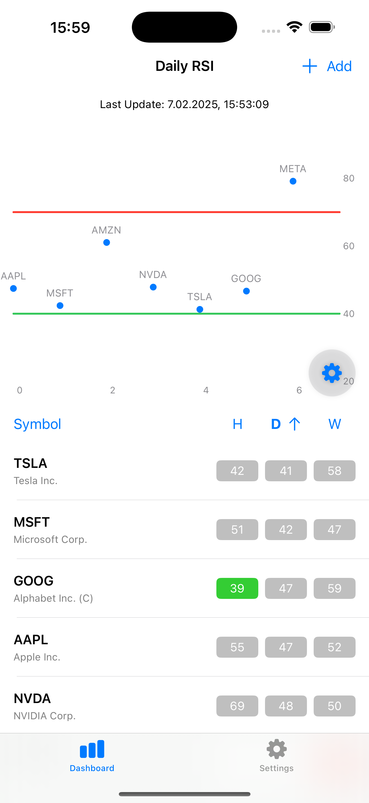

Welcome to Hello RSI

Track your investments smarter with real-time RSI alerts, market insights, and portfolio management.
Unlock Smarter Portfolio Management with Hello RSI
Take control of your investments with Hello RSI, the ultimate portfolio management app designed to keep you informed and empowered. Whether you're a seasoned investor or just getting started, our app provides real-time insights, RSI-based alerts, and seamless tracking to help you make confident financial decisions.
Key Features:
- Real-Time RSI Alerts – Stay ahead of market trends with automated notifications when stocks reach overbought or oversold levels.
- Custom Portfolio Tracking – Easily add, remove, and manage your stock portfolio with a few taps.
- Market Data Integration – Get up-to-date information on your favorite stocks and funds.
- Smart Notifications – Never miss a critical investment opportunity with intelligent alerting.
- User-Friendly Interface – Designed for ease of use, so you can focus on what matters most—your investments.
Why Choose Hello RSI?
- Effortless Management – Track multiple stocks and funds in one place.
- Custom Alerts – Set your own RSI thresholds and receive notifications tailored to your strategy.
- Secure & Reliable – Built with data privacy and accuracy at its core.
Optimize your investment strategy today! Download Hello RSI now and stay ahead of the market.
Privacy Policy